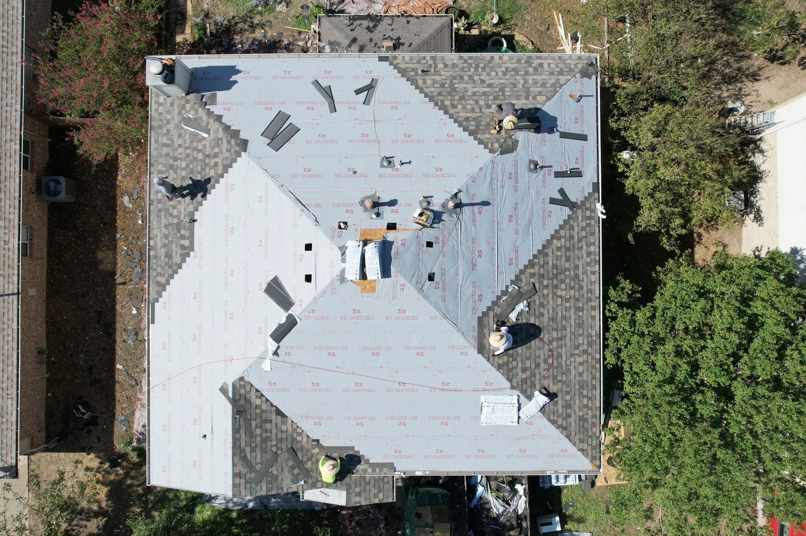
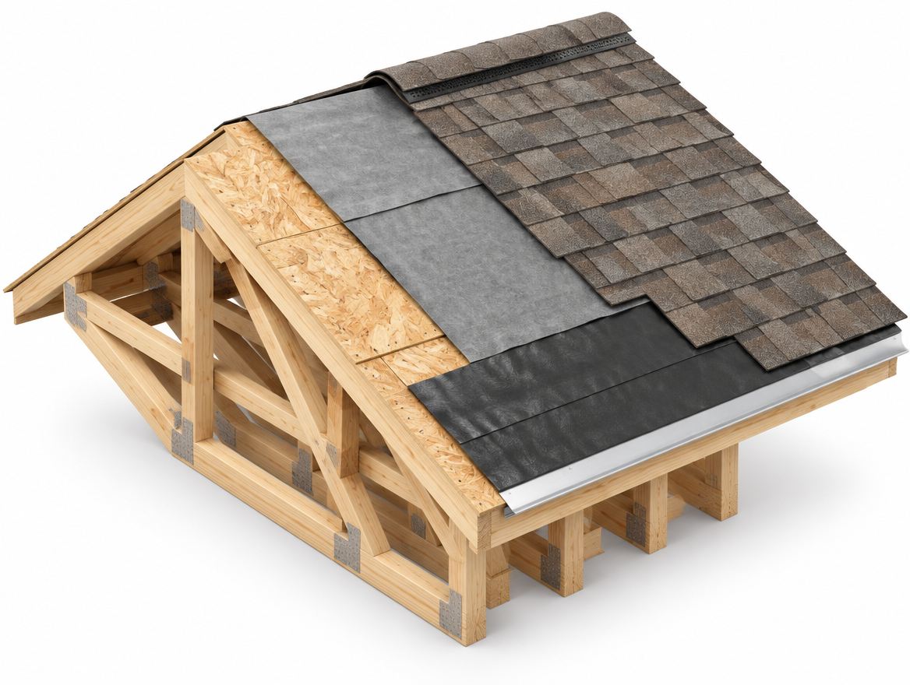
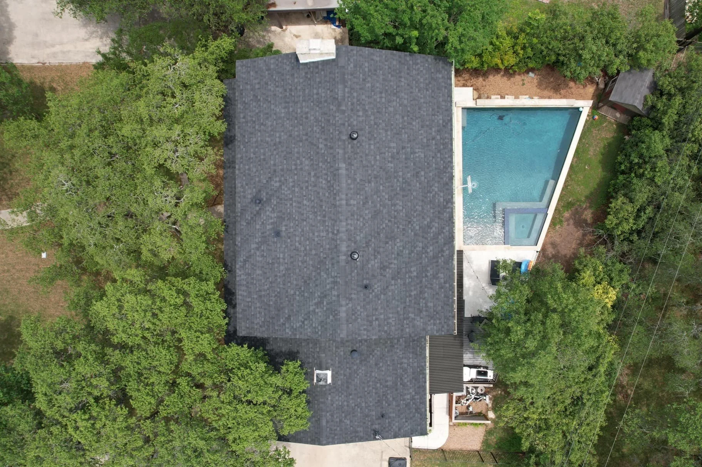
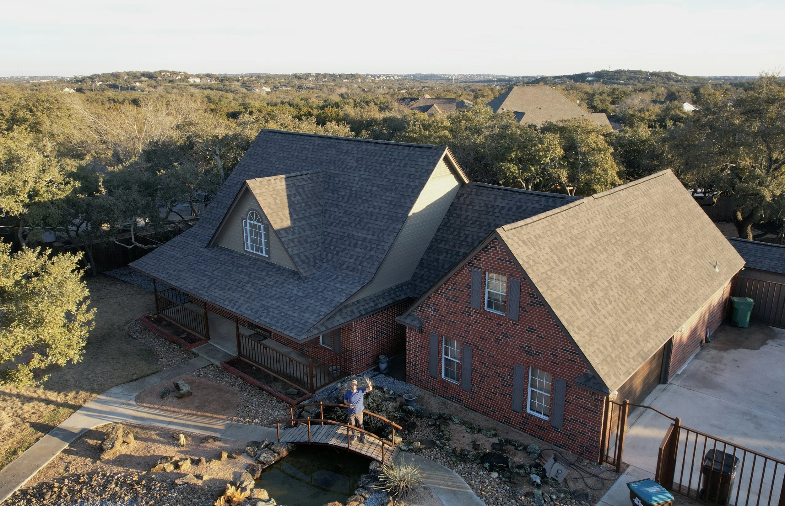
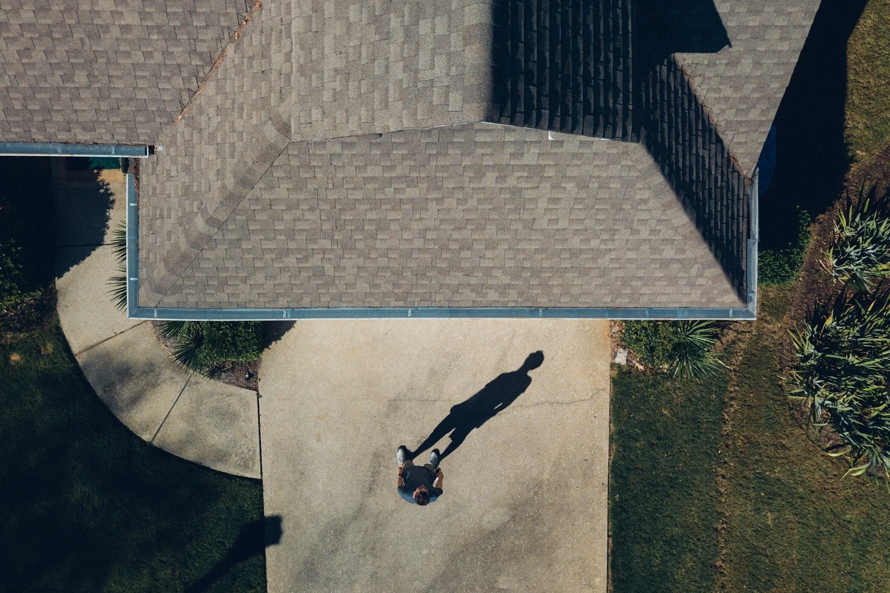

New BraunfelsRoofing
Locally owned and operated. We install, repair, and maintain roofs and gutters for homeowners across New Braunfels and the surrounding communities — with honest inspections and craftsmanship built to last.

Licensed & Insured Free Inspections Shingle + MetalRoofing & Exterior Services
From a single repair to a full replacement, our team handles every part of the job — materials, labor, and the insurance paperwork in between.
Residential Roofing
Full re-roofs and roof replacements in asphalt shingle or standing-seam metal, built for Hill Country weather and installed by an experienced crew.
Seamless Gutters
Custom-fit seamless gutters that move water away from your roofline and foundation, plus repair and maintenance on existing gutter systems.
Repairs & Insurance
Storm damage repair, leak fixes, and inspections — including help documenting and filing insurance claims from start to approval.
What's Actually In Your Roof
A roof isn't just the shingles you can see. Scroll through the six layers working together underneath them — from the framework up, the same way we build it on your house.

One roof, every stage at once — the cutaway shows deck, underlayment, and shingles peeled back in a single frame.
-
Layer 1 of 6
Structural Framework
Rafters or trusses set the roof's pitch and carry every layer above them. Nothing else goes on until this is square and solid.
-
Layer 2 of 6
Roof Deck
Plywood or OSB sheathing nailed to the rafters. Every layer above only works if this stays solid and dry.
-
Layer 3 of 6
Underlayment
A synthetic or felt moisture barrier laid over the deck, so wind-driven rain can't reach the wood even if a shingle is ever compromised.
-
Layer 4 of 6
Ice & Water Shield, Drip Edge
A rubberized membrane at the eaves backs up the underlayment where ice and wind-driven rain hit hardest, sealed by metal drip edge along the roof's edge.
-
Layer 5 of 6
Field Shingles
Overlapping courses of asphalt shingle or standing-seam metal, each row covering the fasteners of the row underneath it.
-
Layer 6 of 6
Ridge Cap
Shaped caps finish the peak, tying both roof planes together at the highest, most exposed line on the house.
Built for What This Weather Does to a Roof
New Braunfels sees hard sun, hail, and straight-line wind in the same season. Here's what that means for the roof over your head.
Impact-rated shingle options
Class 3 and Class 4 impact-rated shingles hold up better against hail without needing a full tear-off after every storm — worth discussing before your next re-roof, especially on south-facing slopes that take the brunt of it.
Uplift starts at the edges
Most wind failures begin at loose starter courses or under-fastened field shingles along the eaves and rakes — the parts inspectors check first, and the parts we install to spec, not just to code minimum.
Attic ventilation matters more here
A poorly ventilated attic bakes shingles from underneath and shortens their life regardless of brand. We check ridge and soffit ventilation as part of every inspection, not just the shingles themselves.
Roofing Done Right, By Your Neighbors
At New Braunfels Roofing, we believe in more than just installing roofs — we're dedicated to safeguarding the homes and businesses in our community. As your trusted neighborhood roofer, we take pride in our craftsmanship and our commitment to doing the job right the first time.
Every property is different, which is why we offer a range of roofing materials and take the time to walk you through what fits your home, your roofline, and your budget before any work begins.
More About Us
Our Service Area
Based in New Braunfels, we work throughout the surrounding Hill Country communities.
A Few Roofs We've Completed


Protect Your Home With a Free Inspection
No pressure, no obligation — just an honest look at your roof and straight answers about what it needs.
Schedule Your Free Inspection